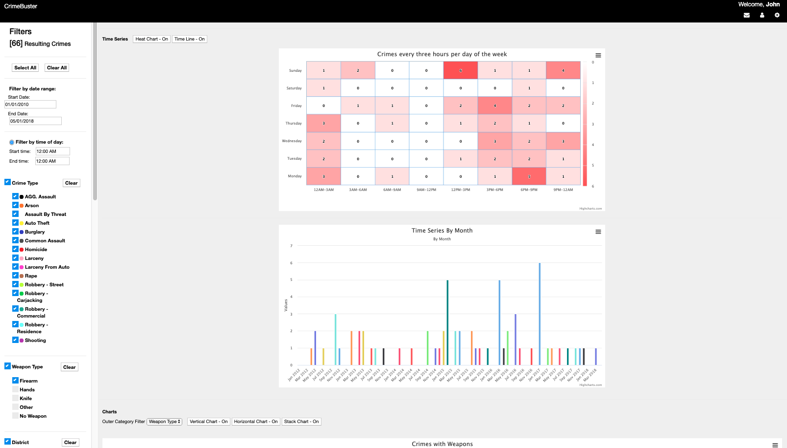
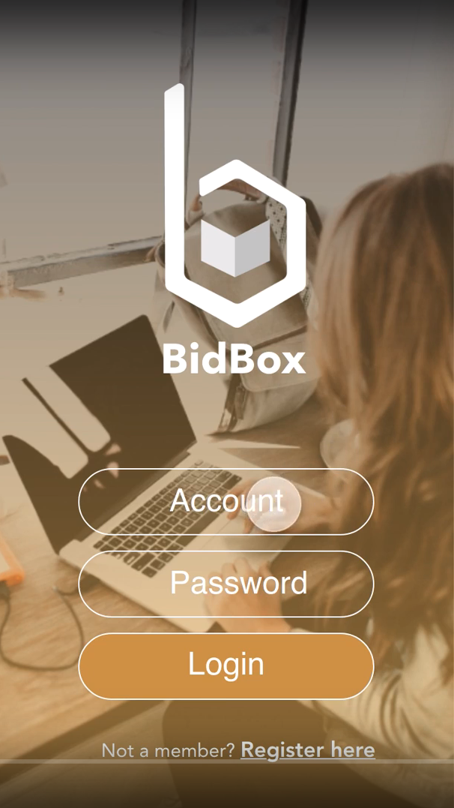
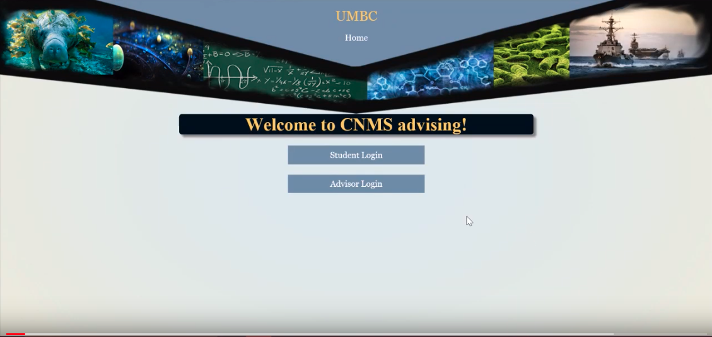
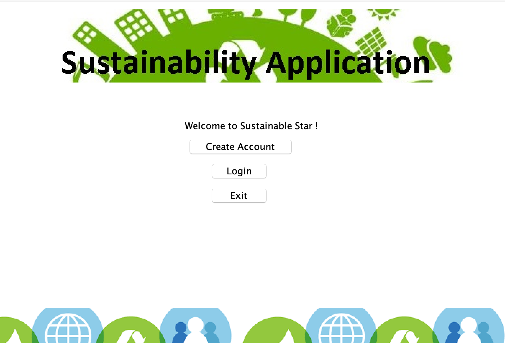
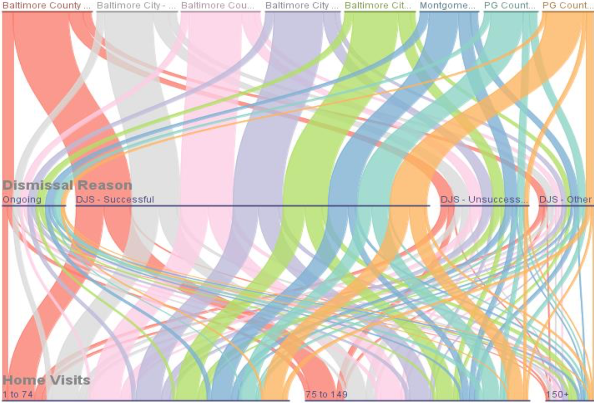
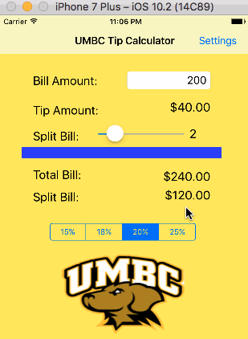
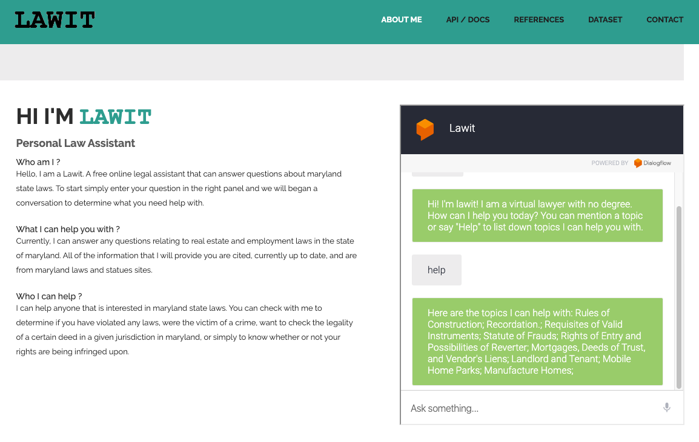

Hi I'm Sam Allen Mendimasa
Software Engineer and Graduate Student
My name is Sam Mendimasa. I am currently in the master's program at the University of Maryland Baltimore County, pursuing a degree in Computer Science with a focus on security. My research is focused on cloud security concerns in Docker and RedHat OpenShift. Outside of my studies, I do a lot of volunteering work with environmental organizations to improve sustainability and help create a greener planet. I am also an activist for improving the Gender Climate in Stem fields.
Interests
Education
M.S. Computer Science, 2020University of Maryland, Baltimore County (UMBC)
B.S. Computer Science, 2018
University of Maryland, Baltimore County (UMBC)
A.A. Computer Science, 2016
Montgomery Community College
Programming
A list of Programming languages and technologies that I am proficient in.
Java
C++
Python
SQL
GoLang
Web Development
A list of Web development languages and technologies that I am proficient in.
JavaScript
PHP
HTML & CSS
AJAX
Bootstrap
Security
A list of security and penetration testing tools that I am proficient in.
OWASP ZED ATTACK PROXY (ZAP)
Nessus & BurpSuite Vulnerability Scanner
Metasploit
NMAP
GrayLog & Kibana
Elastic Search
Cloud
A list of cloud and container tools and technologies that I am proficent in.
RedHat OpenShift Origin
OpenStack (DevStack)
Docker
Kubernetes (Container Orchestration)
ManageIQ (Cloud Management Platform)
Work Experience
Jan. 2018 - Present
Software Engineer/Analyst (Team Lead)
UMBC, Dept. of Information Technology
Jun. 2019 – Aug. 2019
Systems and Security Engineering Intern
Hughes Network Systems, Technical Services
Jun. 2018 – Aug. 2018
Cyber Security Engineering Intern
Hughes Network Systems, Technical Services
Oct. 2016 - Dec. 2017
IT Support Specialist
UMBC Dept. of Infrastructure and Technology
Jun. 2017 - Aug. 2017
Information Technology Intern
Hughes Network Systems, Social Media
Aug. 2015 - Oct. 2016
Programmer for TIDES (Teaching to increase Diversity and Equity in Stem)
Montgomery College, Dept. of CS and IS
Jun. 2016 - Aug. 2016
Intern IT Support Specialist
Montgomery County Public Schools, Dept. of Instructional Technology
Portfolio

CrimeBuster
Visualization Website
Tools: HTML, CSS, PHP, JavaScript, Vue.js, SQL, SQLite
The Crimebuster application used the crime datasets on the open Baltimore website and allowed users to generate various visualizations such as geospatial maps, heat maps, charts, and stacked bar graphs. These visualizations could be used to investigate and determine locations, time, patterns, and occurrence of certain crime, which will assist the police in creating better solutions that will help make Baltimore safer.
Git Repository
Cloud Forensics
Security & INSuREHub Project
Tools: DevStack, dumpIT, volatility, frost
The cloud forensics project aims to address information volatility in cloud infrastructure. Based on some Cloud Service Providers (CSP) policies, the memory of VMs are erased when they are turned off. This is often done as a security precaution, however, our research sought to identify critical information that is lost and that could be used in identifying how VMs were compromised and possibly the malicious attacker. My role in this project was to setup the cloud infrastructure using devstack and to ensure that all services communicated and worked successfully.
Presentation & Results
Paper

RESTful API for CRUD Operations
Operating Systems Project
Tools: GoLang
Designed and developed a restful web service to manage resources and sites with multiple access points.
Git Repository

BidBox
Android Mobile App
Tools: Java, Node.js, MongoDB, Android Studio
BidBox is an android app for auctioning books to students, which allow users to create and bid on different textbooks.
Git Repository
Presentation
Video Demo

CNMS Advising Website
Appointment Booking Website
Tools: PHP, HTML, CSS, JavaScript, Bootstrap
The CNMS advising website is a web application created to allow students to book appointmnets with academic advisors in UMBC College of Natural and Mathematical Sciences. This website can handle both individual as well as group advising for students still within the gateway portion of their academic career.
Git Repository
Video Demo

Sustainable Star
Hackathon & Java GUI Application
Tools: Java, Eclipse, Swing, Excel, and Apache POI
Sustainable Star is an application to improve recycling and sustainability at UMBC. The application connects students to dining venues on UMBC campus, determine the materials that each vender uses, and characterize each item as recyclable, compostable, or landfill. The App tracks and ranks the users’ recycling and composting rates. Won UMBC Hackathon Student Government Association (SGA) prize for best environmental app. In development for mobile phones.
Git Repository

Choice DJS (Department of Juvenile Services)
Visualization & Website Application
Tools: Java, SQLite, JavaScript, Tableau
Developed an application that visualized the Choice DJS dataset from the 2016-17 year by creaing three distinct visualizations: Geographic Map, Heat Map, and Parallel Sets. Investigated and wrote a research paper to address ways of improving Choice by reducing recidivism and out-of-home placements, strengthening youth and family ties to the community through education and employment, and promoting community safety.
Presentation
Poster
Paper

UMBC Tip Calculator
iOS Mobile App
Tools: Swift, XCode
Developed a tip calculator app for UMBC students that splits the total spending bill 6 ways.
Git Repository

LawIT
Web-based Chatbot App
Tools: DialogFlow, Azure Web Applications, MSSQL, Javascript, & C#
Developed a web-based chatbot service that acts as a free online legal consultant. The chatbot prompts users for information via questions designed to identify the relevant legal text for the user’s inquiry, and uses the input to give the users the ability to select the relevant record
Git Repository
Presentation
Paper
Awards and Activities
UMBC Hackathons (Sep. 2016 - Present)
Mentor & SGA Prize Winner for Sustainability Application in 2016
Developed an app to improve recycling and sustainability at UMBC by tracking recycling and composting rates. Please see the Sustainable Star project in the portfolio. I currently also serve as a mentor during the hackathon for teams creating web, mobile, and security applications.
MC Programming Competition (Apr. 2016 - Present)
Volunteer/Programming Judge
Montgomery College (MC) programming competition brings talented high school students from the washington metropolitan area to participate in a programming competition using the Java programming language. I help to create the technical questions and solutions for this competition and also serve as one of the judges during the event.
Allies in CWIT (Aug. 2017 - May 2019)
Leadership/Planning Committee
A dedicated group of allies of women in technology that meet regularly to discuss gender issues in technology, deepen their understanding of their own identities and work together to develop projects that will positively impact UMBC College of Engineering and Information Technology community. I created and led discussions on topics such as microagression, intersectionality, and understanding your own privilege.
Eco-Ambassador (Aug. 2016 - Dec. 2018)
Member
Eco-Ambassadors are a team of UMBC students partnering with university sustainability efforts to advance social responsibility and environmental sustainability in the student body. The team educates peers in residential, commuter, academic, and extracurricular settings about environmental solutions in order to empower UMBC to adopt environmentally friendly practices. As an eco-ambassador I helped plan and organize events including earth day, harvest fest, an eco-fashion show, and UMBC climate action info panels.
Cyber Practicum (Aug. 2016 - Dec. 2017)
Member
Attended weekly meetings where representatives from various companies in the field of cybersecurity come and gave insight regarding their daily tasks. Read and shared current events regarding cybersecurity and discussed possible ways of preventing the same issue from arising again.
CyberDawgs Cyber Defense Competition (Oct. 2017)
First Place Winner
Participated in UMBC CyberDawgs Red Team & Blue Team competition. Protected a windows 7 machine and ensure that all services were active.
Also, completed injects during the specify time to earn points for my team.
CodePath IOS/Internship Prep Course (Aug. 2016 – May 2017)
Organizer
Worked with the Silicon Valley CodePath program to organize and lead the iOS development and interview prep classes at UMBC.
Environmental Club (Aug. 2015 - May. 2016)
Co-Founder, President, and Recipient of Best Service Award
Cofounded and led the environmental club at montgomery community college. The club sought to educate the public about varies environmental issues by distributing fliers and organizing events for earth day and planning for an on-campus bee garden.
Contact
Contact Info
Mobile Phone
(301) 502-2119
sam34@umbc.edu
Send Message
Note: This form is currently not working. Please contact me by email or phone. Thanks.
Your text message sent successfully!
Sorry! Message not sent. Something went wrong!!